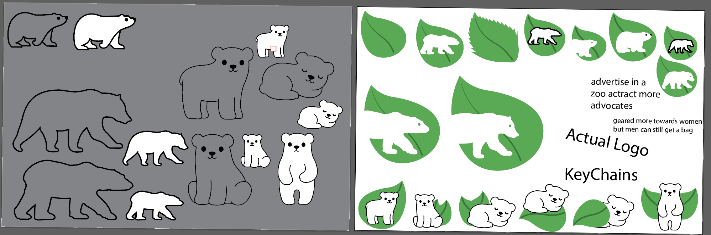
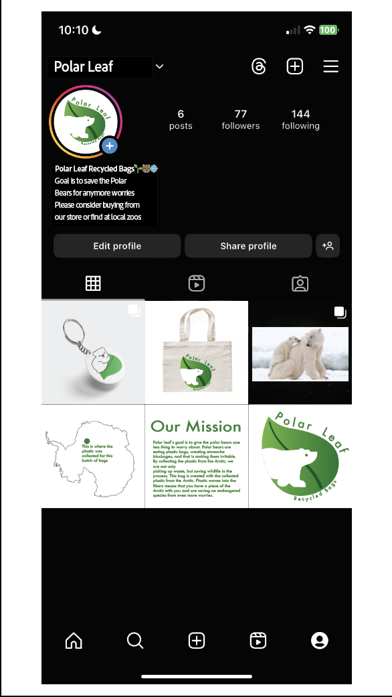
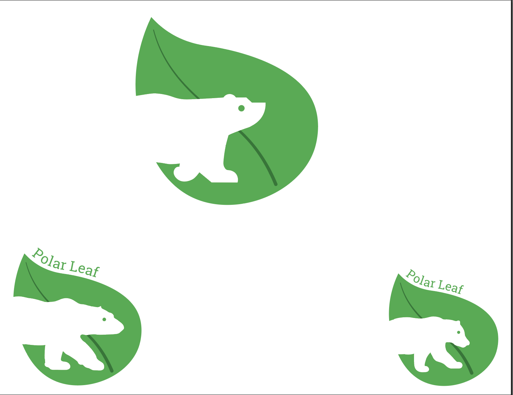
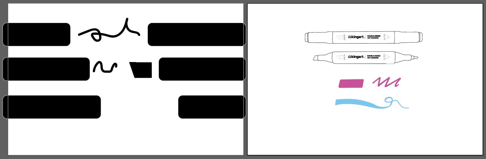
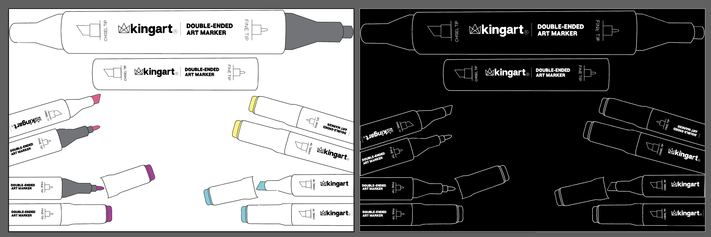
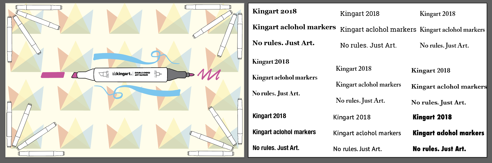
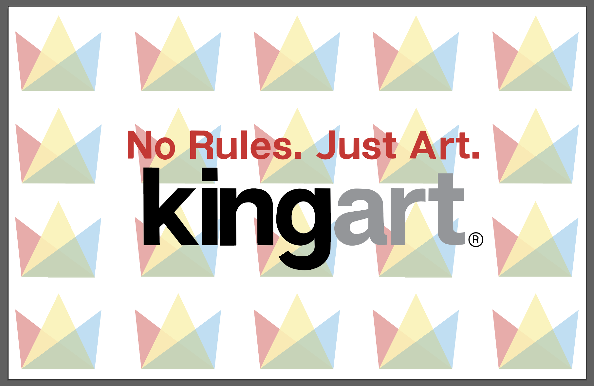
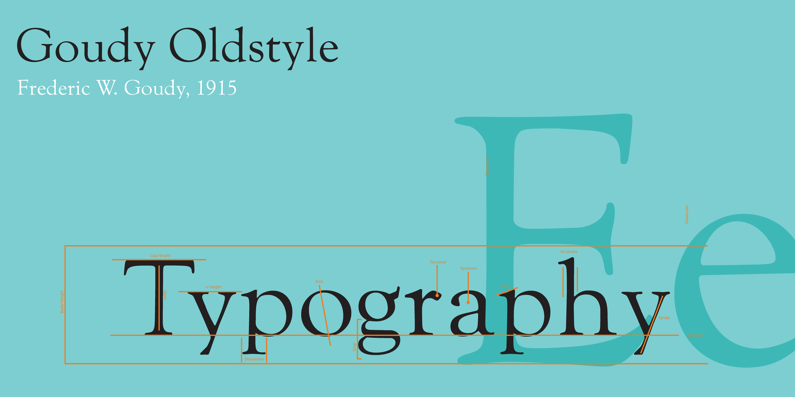

This is the website both in desktop and mobile form, the pre-refined design, going through a design process you will have a lot of re-designs. And closer look at the business card, and its animation I did for it. If you click on the mobile version picture it will take you to the website to see the final product.
The three images above are a poster for a billboaard, what the box would look like that would hold the tote bags, and the bellyband that goes around the rolled up tote bags, what would be on the tote bags themseleves would be the Polar Leaf Logo.   
This is the process of the tote bag project, where we had to make an entire clean brand that has a good cause behind it. I did research that polar bears eat plastic bags that float to the antartic ocean, they get irritable and agrssive because there is a blockage of plastic in their stomach. So the brand is cnetered around a polar bear sihuette in a leaf, leaf connecting to nature and the polar bear connecting to the cause. The tote bag is made out of recycled plastic bags collected around the areas are being affected.
Poster project of a random object found in our rooms. Below is all of the process images for this poster project
    This the typographuc anatomy post I did in my typography class detailing all of the anatomy of each letter